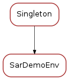

Sardana test API¶
Decorator¶
-
@macroTest[source]¶ -
macroTest(klass=None, helper_name=None, test_method_name=None, test_method_doc=None, **helper_kwargs)[source] This decorator is an specialization of :function::taurus.test.insertTest for macro testing. It inserts test methods from a helper method that may accept arguments.
macroTest provides a very economic API for creating new tests for a given macro based on a helper method.
macroTest accepts the following arguments:
- helper_name (str): the name of the helper method. macroTest will
- insert a test method which calls the helper with any the helper_kwargs (see below).
- test_method_name (str): Optional. Name of the test method to be used.
- If None given, one will be generated from the macro and helper names.
- test_method_doc (str): The docstring for the inserted test method
- (this shows in the unit test output). If None given, a default one is generated which includes the input parameters and the helper name.
- **helper_kwargs: All remaining keyword arguments are passed to the
- helper.
macroTest can work with the macro_name class member
This decorator can be considered a “base” decorator. It is often used to create other decorators in which the helper method is pre-set. Some of them are already provided in this module:
testRun()is equivalent to macroTest with helper_name=’macro_runs’testStop()is equivalent to macroTest with helper_name=’macro_stops’testFail()is equivalent to macroTest with helper_name=’macro_fails’
The advantage of using the decorators compared to writing the test methods directly is that the helper method can get keyword arguments and therefore avoid duplication of code for very similar tests (think, e.g. on writing similar tests for various sets of macro input parameters):
Consider the following code written using the
RunMacroTestCase.macro_runs()helper:class FooTest(RunMacroTestCase, unittest.TestCase) macro_name = twice def test_foo_runs_with_input_2(self): '''test that twice(2) runs''' self.macro_runs(macro_params=['2']) def test_foo_runs_with_input_minus_1(self): '''test that twice(2) runs''' self.macro_runs(macro_params=['-1'])
The equivalent code could be written as:
@macroTest(helper_name='macro_runs', macro_params=['2']) @macroTest(helper_name='macro_runs', macro_params=['-1']) class FooTest(RunMacroTestCase, unittest.TestCase): macro_name = 'twice'
Or, even better, using the specialized testRun decorator:
@testRun(macro_params=['2']) @testRun(macro_params=['-1']) class FooTest(RunMacroTestCase, unittest.TestCase): macro_name = 'twice'
See also
:function::taurus.test.insertTest
-
BaseMacroExecutor¶

-
class
BaseMacroExecutor[source]¶ Abstract MacroExecutor class. Inherit from it if you want to create your own macro executor.
-
log_levels= ['debug', 'output', 'info', 'warning', 'critical', 'error']¶
-
run(macro_name, macro_params=None, sync=True, timeout=None)[source]¶ Execute macro.
Parameters: - macro_name – (string) name of macro to be executed
- macro_params – (list<string>) macro parameters (default is macro_params=None for macros without parameters or with the default values)
- sync – (bool) whether synchronous or asynchronous call (default is sync=True)
- timeout –
- (float) timeout (in s) that will be passed to the wait
- method, in case of synchronous execution; None means wait infinitely
In asyncrhonous execution method
wait()has to be explicitly called.
-
wait(timeout=None)[source]¶ Wait until macro is done. Use it in asynchronous executions.
Parameters: timeout – (float) waiting timeout (in s); None means wait infinitely
-
stop(started_event_timeout=3.0)[source]¶ Stop macro execution. Execute macro in synchronous way before using this method.
Parameters: started_event_timeout – (float) waiting timeout for started event
-
registerLog(log_level)[source]¶ Start registering log messages.
Parameters: log_level – (str) string indicating the log level
-
unregisterLog(log_level)[source]¶ Stop registering log messages.
Parameters: log_level – (str) string indicating the log level
-
getLog(log_level)[source]¶ Get log messages.
Parameters: log_level – (str) string indicating the log level Returns: (seq<str>) list of strings with log messages
-
MacroExecutorFactory¶

-
class
MacroExecutorFactory[source]¶ A scheme-agnostic factory for MacroExecutor instances
Example:
f = MacroExecutorFactory() f.getMacroExecutor('tango://my/door/name') #returns a TangoMacroExecutor
Note: For the moment, only TangoMacroExecutor is supported
-
getMacroExecutor(door_name=None)[source]¶ Returns a macro executor instance (a subclass of
BaseMacroExecutor) depending on the door being used.
-
init(*p, **k)¶
-
BaseMacroTestCase¶

-
class
BaseMacroTestCase[source]¶ An abstract class for macro testing. BaseMacroTestCase will provide a macro_executor member which is an instance of BaseMacroExecutor and which can be used to run a macro.
To use it, simply inherit from BaseMacroTestCase and unittest.TestCase and provide the following class members:
- macro_name (string) name of the macro to be tested
- door_name (string) name of the door where the macro will be executed.
- This is optional. If not set, sardanacustomsettings.UNITTEST_DOOR_NAME is used
Then you may define test methods.
-
macro_name= None¶
-
door_name= 'door/demo1/1'¶
RunMacroTestCase¶

-
class
RunMacroTestCase[source]¶ A base class for testing execution of arbitrary Sardana macros. See
BaseMacroTestCasefor requirements.- It provides the following helper methods:
-
setUp()[source]¶ Preconditions: - Those from
BaseMacroTestCase- the macro executor registers to all the log levels
-
macro_runs(macro_name=None, macro_params=None, wait_timeout=None, data=0)[source]¶ A helper method to create tests that check if the macro can be successfully executed for the given input parameters. It may also optionally perform checks on the outputs from the execution.
Parameters: - macro_name – (str) macro name (takes precedence over macro_name class member)
- macro_params – (seq<str>): parameters for running the macro. If passed, they must be given as a sequence of their string representations.
- wait_timeout – (float) maximum allowed time (in s) for the macro to finish. By default infinite timeout is used (None).
- data – (obj) Optional. If passed, the macro data after the execution is tested to be equal to this.
-
macro_fails(macro_name=None, macro_params=None, wait_timeout=None, exception=None)[source]¶ Check that the macro fails to run for the given input parameters
Parameters: - macro_name – (str) macro name (takes precedence over macro_name class member)
- macro_params – (seq<str>) input parameters for the macro
- wait_timeout – maximum allowed time for the macro to fail. By default infinite timeout (None) is used.
- exception – (str or Exception) if given, an additional check of the type of the exception is done. (IMPORTANT: this is just a comparison of str representations of exception objects)
-
door_name= 'door/demo1/1'¶
-
macro_name= None¶
-
tearDown()¶ The macro_executor instance must be removed
RunStopMacroTestCase¶

-
class
RunStopMacroTestCase[source]¶ This is an extension of
RunMacroTestCaseto include helpers for testing the abort process of a macro. Useful for Runnable and Stopable macros.It provides the
macro_stops()helper-
macro_stops(macro_name=None, macro_params=None, stop_delay=0.1, wait_timeout=None)[source]¶ A helper method to create tests that check if the macro can be successfully stoped (a.k.a. aborted) after it has been launched.
Parameters: - macro_name – (str) macro name (takes precedence over macro_name class member)
- macro_params – (seq<str>): parameters for running the macro. If passed, they must be given as a sequence of their string representations.
- stop_delay – (float) Time (in s) to wait between launching the macro and sending the stop command. default=0.1
- wait_timeout – (float) maximum allowed time (in s) for the macro to finish. By default infinite timeout (None) is used.
-
assertFinished(msg)¶ Asserts that macro has finished.
-
door_name= 'door/demo1/1'¶
-
macro_fails(macro_name=None, macro_params=None, wait_timeout=None, exception=None)¶ Check that the macro fails to run for the given input parameters
Parameters: - macro_name – (str) macro name (takes precedence over macro_name class member)
- macro_params – (seq<str>) input parameters for the macro
- wait_timeout – maximum allowed time for the macro to fail. By default infinite timeout (None) is used.
- exception – (str or Exception) if given, an additional check of the type of the exception is done. (IMPORTANT: this is just a comparison of str representations of exception objects)
-
macro_name= None¶
-
macro_runs(macro_name=None, macro_params=None, wait_timeout=None, data=0)¶ A helper method to create tests that check if the macro can be successfully executed for the given input parameters. It may also optionally perform checks on the outputs from the execution.
Parameters: - macro_name – (str) macro name (takes precedence over macro_name class member)
- macro_params – (seq<str>): parameters for running the macro. If passed, they must be given as a sequence of their string representations.
- wait_timeout – (float) maximum allowed time (in s) for the macro to finish. By default infinite timeout is used (None).
- data – (obj) Optional. If passed, the macro data after the execution is tested to be equal to this.
-
setUp()¶ Preconditions: - Those from
BaseMacroTestCase- the macro executor registers to all the log levels
-
tearDown()¶ The macro_executor instance must be removed
-
SarDemoEnv¶
-
class
SarDemoEnv[source]¶ Class to get _SAR_DEMO environment variable with cross checking with the MacroServer (given by
UNITTEST_DOOR_NAME)-
ready= False¶
-
getElements(elem_type='all')[source]¶ Return the name of sardemo element(s) of given elem type
Parameters: elem_type – (str) type of elemnts to return (all by default) Returns: (list<str>)
-